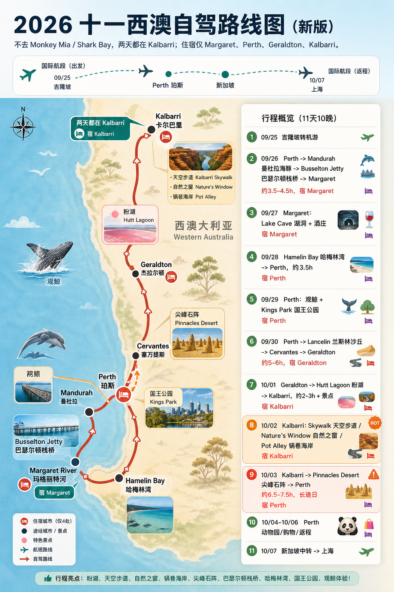

09/25 周五浦东 T2 → 吉隆坡 T2；吉隆坡包车一日游
吉隆坡转机一日游
保留粉红清真寺、国家清真寺、茨厂街/柏威年、双子塔夜景即可，小印度和蓝色清真寺看体力取舍。
住宿：飞机上/中转
25 Sep - 07 Oct 2026 · Kuala Lumpur · Western Australia · Singapore
新版行程不去 Monkey Mia / Shark Bay，两天都在 Kalbarri。住宿固定在 Margaret、Perth、Geraldton、Kalbarri 四个地点，减少搬家和长途回撤。
取消 Shark Bay 往返后，Kalbarri 有两天完整缓冲，10/03 仍是长途日，但不再是从 Shark Bay 硬赶 Pinnacles。整体更适合给同行者执行。

路线图由 GPT Image 2 重绘，用于视觉化沟通；具体日期、住宿和车程以下方日程为准。
保留粉红清真寺、国家清真寺、茨厂街/柏威年、双子塔夜景即可，小印度和蓝色清真寺看体力取舍。
早出发南下，傍晚看 Pinnacles Desert 尖峰石阵，再回 Perth。

Perth Zoo、购物、打包、机场还车。10/06 下午飞新加坡。


粉色穹顶和湖畔倒影，适合吉隆坡转机日打卡。
建议：45-60 分钟

彩色街区和印度餐，适合短暂停留。
建议：30-45 分钟

吉隆坡代表性现代清真寺，注意开放时段和着装。
建议：45 分钟

蓝色穹顶视觉很强，但离市区较远，转机日可作为取舍项。
建议：60-90 分钟

吃饭和街区扫街方便，可和柏威年/双子塔前后衔接。
建议：45-60 分钟

转机日夜景收尾，适合放最后。
建议：45-60 分钟

Perth 南下路上顺路，适合落地后轻量活动。
建议：1-1.5 小时

1.8km 长栈桥、观光小火车和水下观测站。
建议：1.5-3 小时

地下湖和钟乳石，Margaret 区域洞穴中视觉辨识度高。
建议：1-1.5 小时

花园、餐厅和品酒体验，适合作为 Margaret 酒庄午餐候选。
建议：1.5-2.5 小时

Margaret River 经典酒庄之一，适合餐酒体验。
建议：1.5-2.5 小时

浅滩魔鬼鱼是亮点，但观赏依赖海况和运气。
建议：45-90 分钟

Perth 城市天际线和 Swan River 视角，适合休整日傍晚。
建议：1-2 小时

北上 Geraldton 路上顺路，可滑沙和拍照。
建议：45-75 分钟

Kalbarri 线高光之一，晴天正午前后颜色更明显。
建议：45-75 分钟

Murchison Gorge 峡谷视角，适合和 Nature’s Window 同天。
建议：1-1.5 小时

Kalbarri 标志性岩窗，需步行，天气热时要控制时间。
建议：1-2 小时

红岩海岸线，适合傍晚光线；风大时注意安全。
建议：45-90 分钟
Cervantes 附近的石灰岩尖塔，日落/蓝调时刻氛围最好。
建议：1-2 小时
返程前轻松亲子/动物园日程，适合 10/05 早上。
建议：2-4 小时

中转时间最稳的选择，吃饭购物和瀑布都在机场。
建议：1.5-3 小时

经典打卡，但 5.5 小时中转进城风险较高。
建议：备选
小红书 MCP 当前无法稳定返回真实帖子详情，所以这里放了对应景点的小红书检索入口，适合出发前看近期图文、路况、餐厅和拍照机位；官方/旅游平台链接用于核开放时间和预订。
栈桥长度、开放和小火车/观测站信息。
Lake Cave 游览体验和区域信息。
粉湖位置与观赏信息。
Kalbarri 国家公园自然之窗信息。
尖峰石阵和 Discovery Centre 信息。
哈梅林湾地点信息。
用于查看近期中文游记、路况和照片。
用于查看酒庄、洞穴和餐厅体验。
用于查看日落机位和当天自驾反馈。